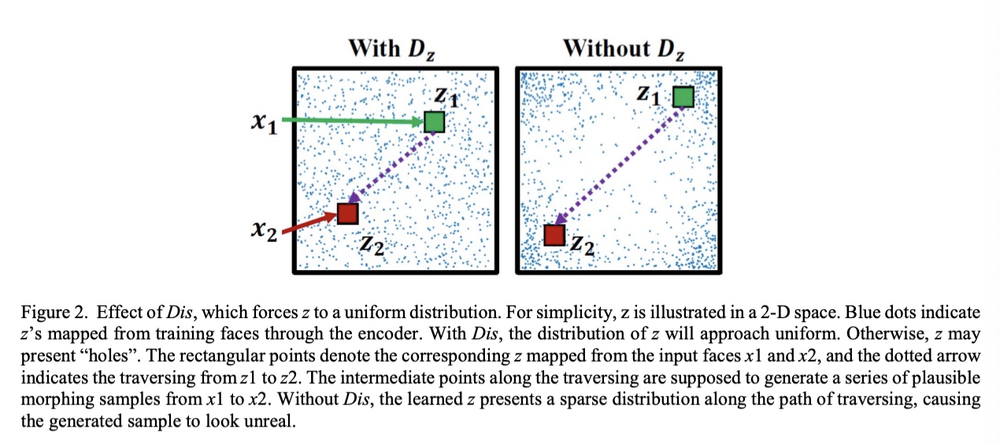

Data Augmentation via Latent Space Interpolation for Image Classification
Sep 18, 20245 min read
Data Augmentation via Latent Space Interpolation for Image Classification
@liuDataAugmentationLatent2018
Abstract
standard data augmentation produces only limited plausible alternative data by for example, flipping, distorting, adding noise to, Cropping(cropping.qmd) a patch from the original samples
adversarial autoencoder (AAE) to impose the feature representations with uniform distribution and apply the linear interpolation on latent space, which is potential to generate a much broader set of augmentations for image classification
improves the generalization and performance of state-of-the-art deep neural networks
Generative models are often evaluated by examining samples from the latent space
Techniques frequently used are random sampling and linear interpolation But often these can result in sampling the latent space from locations very far outside the manifold of probable location In high dimensional space, even with a uniform distribution most points lie on a thin shell in the unit cube. We utilize both the uniform distribution prior to avoid the “hole” of dead zone.
We propose a novel framework to augment the dataset using the interclass interpolation of latent feature representations. 2)uniform distribution are imposed as the prior to avoid “hole” effect of the inter-class interpolation via the adversarial autoencoder network. 3) we explore the linear interpolation on the ILSVRC 2012 and CIFAR(CIFAR.qmd)-10 datasets
PROPOSED METHOD
latent space interpolation followed two useful principles when sampling the latent space of a generative model avoid sampling from locations that are highly unlikely given the prior of the model. being used in the original VAE paper which adjusted sampling through the inverse CDF(CDF.qmd) of the Gaussian to accommodate the Gaussian prior recognize that the dimensionality of the latent space is often artificially high and may contains dead zones that are not on the manifold learned during training implies that simply matching the model’s prior will not always be sufficient to yield samples that appear to have been drawn from the training set
it does not require significant domain knowledge. that interpolation and extrapolation in feature space can improve generalization
Recent approaches have also proposed to regularize(regularize.qmd) the output distribution of a neural network by label smoothing [27], or penalizing highconfidence softmax distributions [28]These methods bear similarities with mixup in the sense that supervision depends on multiple smooth labels, rather than on single hard labels as in traditional ERMthe label smoothing in these works is applied or regularized independently from the associated feature values. the supervision of every example is not overly dominated by the groundtruth labe
LSI transformation establishes a linear relationship between data augmentation and the supervision signal.strong regularizer that improves generalization The linearity constraint, through its effect on the
derivatives of the function approximated, also relates mixup to other methods such as Sobolev training of neural networks [29] or WGAN-GP [30].
When other types of data augmentation are employed in addition to our technique, we can apply them for each image before mixing them into the final image for training
The data augmentation incurs additional time to prepare the input image, but this can be done on the CPU while the GPU is executing the training through back propagation
a single data loader to obtain one minibatch, and then latent space interpolation is applied to the same minibatch after random shuffling
Uniform distribution representations
(images/Pasted image 20230209131445.png.qmd)
Adversarial autoencoder (AAE) [31] can be treated as the combination of generative adversarial networks (GANs) [20] and variational autoencoder (VAE)maintains the autoencoder structure like the VAE but replaces the KLdivergence loss with a discriminative network, denoted by Dis
Instead of generating images from random noise as in GAN, AAE utilizes the encoder part to learn the latent variables approximated on certain prior, making the style of generated images controllable AAE better captures the data manifold compared to VAEinput as x, output as x’, and the distribution of the training data as �!�௧�(ݔ ,(then the distribution of z is q(z|x). Assuming p(z) is a prior distribution, and denotes the random sampling process from p(z). The min-max objective function can be used to� train the Enc and Dis
As for the Dec, the L2 loss is used as the reconstruction loss
Lrecon=∣∣x−x′∣∣22
Dis imposes a prior distribution (i.e., uniform distribution) on z Dis aims to discriminate the z generated by encoder Enc Enc will be trained to generate z that could fool Dis
Such adversarial process forces the distribution of the generated z to gradually approach the prio uniform distribution as the prior, forcing z to evenly populate the latent space with no apparent “holes”. the generated z’s (depicted by blue dots in a 2-D space) present uniform distribution under the Regularization(regularization.qmd) of Dis, while the distribution of z exhibits a “hole” without the application of Dis Exhibition of the “hole” indicates that the samples generated by interpolating between arbitrary z’s may not lie on the real image manifold – generating unrealistic appearancesnot to generate photorealistic images as in GAN offer more informative and discriminative training sample, the adversarial loss in pixel-level is dropped in here for faster training and processing.
Linear interpolation
The difference with mixup [17] in here is that the linear interpolation manipulation is conducted in latent space which align the uniform distribution instead of the pixel-level
The one-hot vectors are used to label the original samples
The loss function for a generated sample are calculated as the weighted sum (via ߣ (of two cross-entropy losses corresponding to both of its original samples
When the 0.5=ߣ, we can simply use two-hot vector to label the generated sample belongs to two of its original samples for faster processing.
CONCLUSION
vicinal risk minimization trains on virtual examples constructed via interpolations of the features in a latent space with uniform distributionSeveral methods are employed to avoid the dead zone in manifold of feature representations.